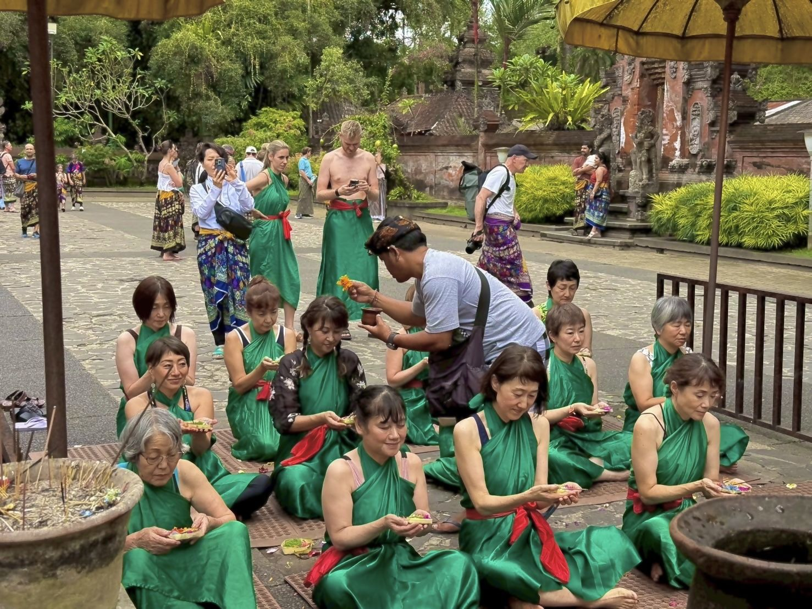
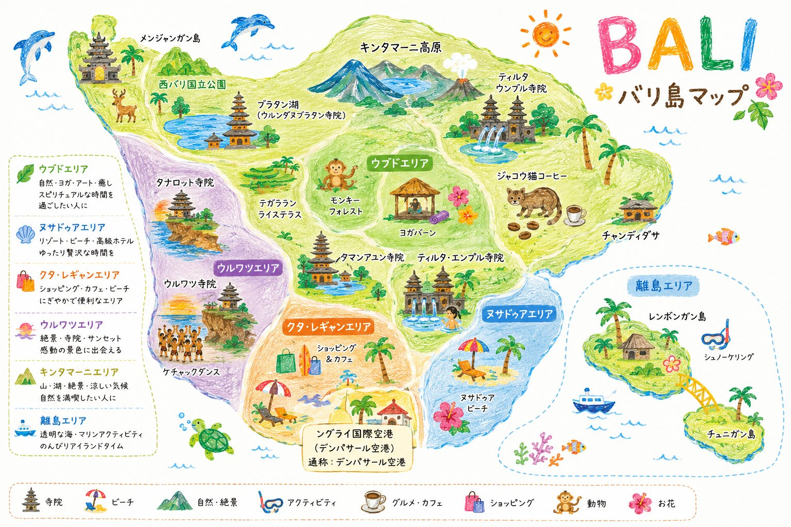
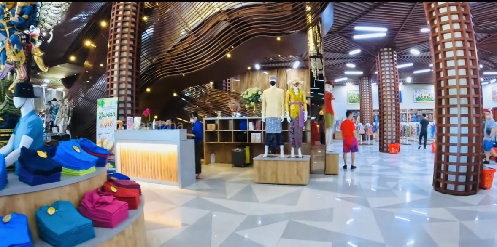

Chapter 01
Chapter 02
🌴 バリ島
🌐
📏
日本からの距離
🛫
飛行時間
🕒
時差
🇯🇵
日本時間
--:--
🇮🇩
バリ時間（現地）
--:--
バリの天気を取得中…
Chapter 03
Chapter 04

Chapter 05
Chapter 06
Chapter 07
旅先で出会う、主な名所・名物をご紹介します。
Chapter 08
Chapter 09

✈️
👆 ここを押してね！日付をタップすると地図の乗り物が動きます
Chapter 10
Chapter 11
Chapter 12
旅の途中で立ち寄る予定のお店をご紹介します。
Chapter 13
旅先で使える、かんたんなあいさつ集です。
Chapter 14
ルピア ＝
0 円
| 日本円 | ルピア（目安） |
|---|
物価の目安
Chapter 15

Chapter 16
Chapter 17
バリ物語
Chapter 18
Chapter 19
チェックした内容は、この端末に自動保存されます。
✈️